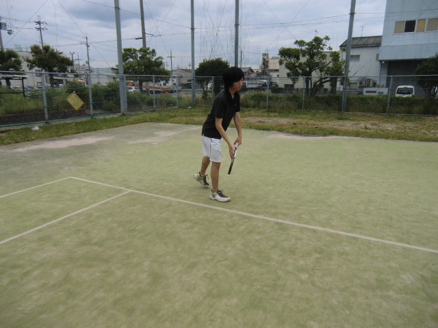
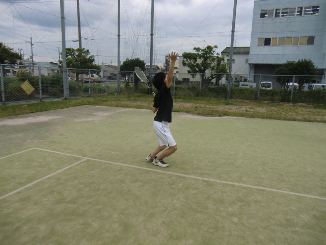
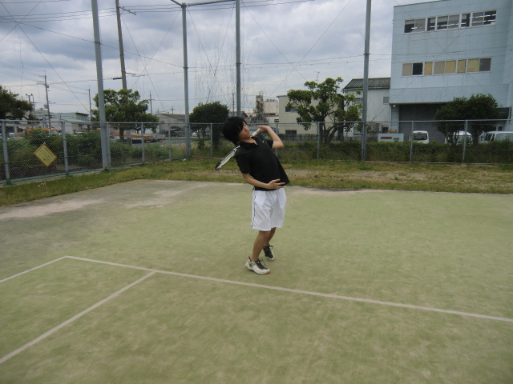
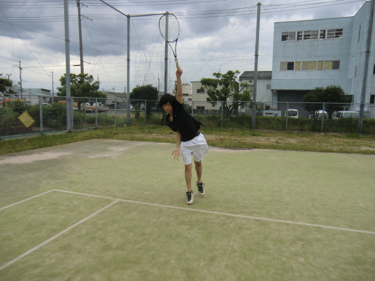

サ
ービス
サービスは「持ち方」のところで説明した通り、イースタン・グリップを使います。かなりウエスタン・グリップに比べて、かなり打ちにくいかと思いますが、コントロールを保つためにも最初の内からイースタンでやるようにしましょう。
 右足がラインと平行になるようにし、前に体重を加えます
↓
 ボールを押し出すイメージでトスをあげます
↓
 腰を後ろにそらして、ラケットをかかえます。
↓
 ボールを押し出すように当て、なるべく高いところで当てます